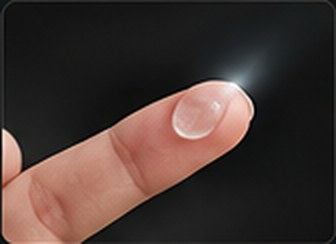
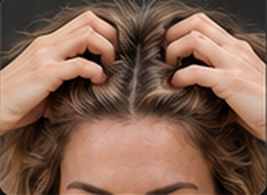

Как использовать
Наносите гель на сухие волосы, только на корни —
именно там скапливается излишний себум.

1Нанесите небольшое количество геля на кончики пальцев
2Распределите гель по корням волос

3Лёгкими движениями вмассируйте в корни

4Готово! Свежие, объёмные и лёгкие волосы
Начинайте с небольшого количества. Следуйте инструкции на упаковке. Средство не заменяет мытьё головы.